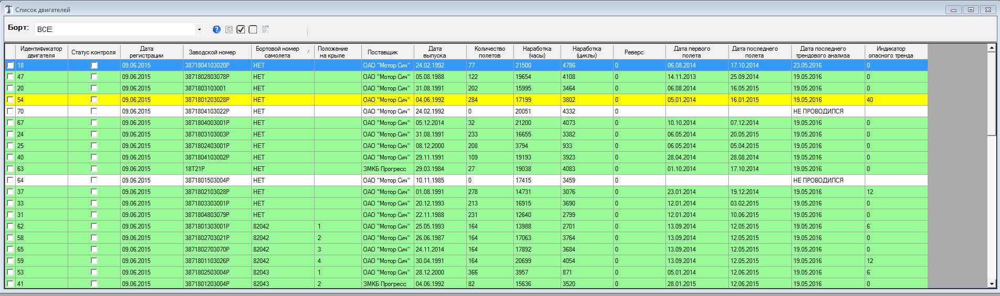
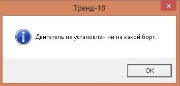
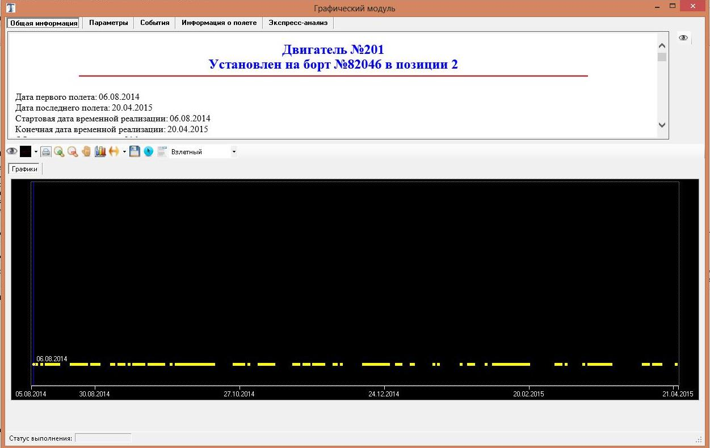
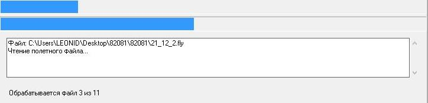
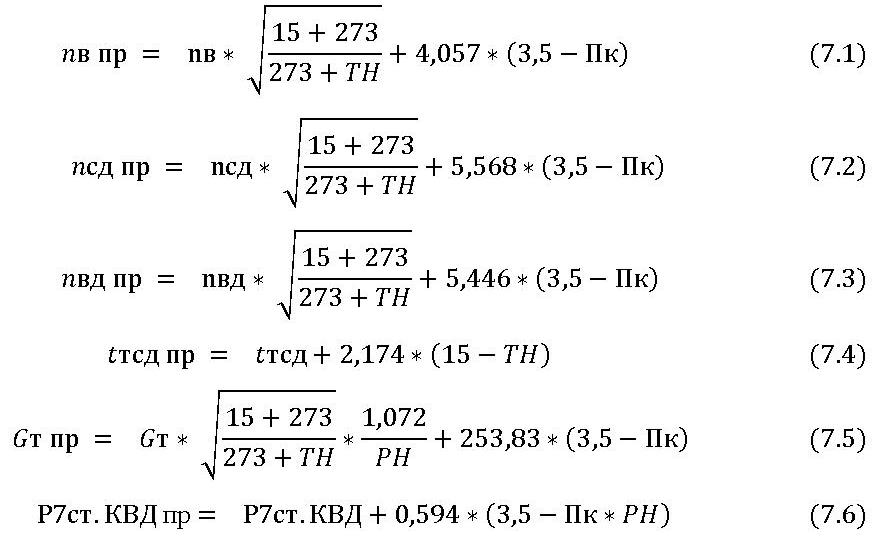
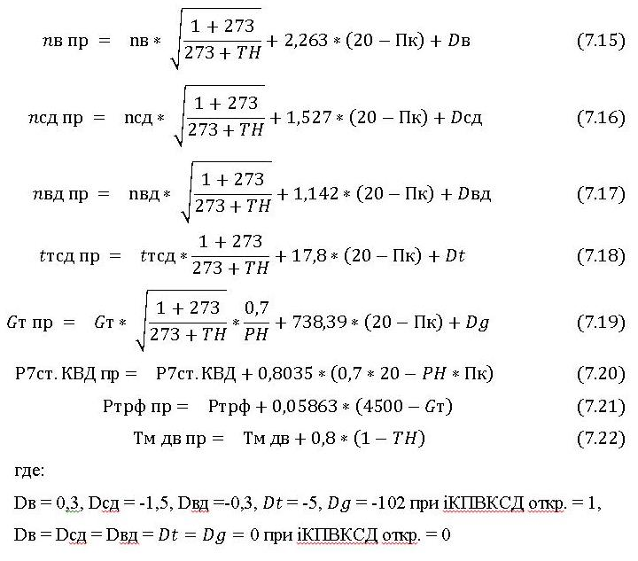

Программное обеспечение для контроля и диагностики технического состояния двигателей типа Д-18Т по регистрируемым параметрам
(ПО ТРЕНД-18)
Руководство оператора
Версия 2.1.0 (от 31.05.2016)
Введение
Программное обеспечение для контроля и диагностики технического состояния двигателей типа Д-18Т по регистрируемым параметрам (далее ПО ТРЕНД-18) предназначено для проведения оперативного диагностирования двигателей с целью поддержания установленного уровня надежности, обеспечения требований безопасности полетов и эффективности эксплуатации двигателей.
Оценка технического состояния двигателей производится на основе информации, зарегистрированной системой БАСК на установившихся режимах работы двигателя, расчета приведенных значений диагностических параметров, вычисления отклонений параметров от предельных значений и анализа тенденций изменения комплексных диагностических признаков. Программа имеет функции автоматизированной обработки, а также обладает широкими возможностями для проведения экспертного анализа контролируемых параметров и принятия диагностических решений о состоянии двигателя.
Программа предназначена к применению в профильных подразделениях АК «Волга-Днепр», выполняющих обработку и анализ полетной информации, поступающей с БАСК самолета АН-124-100.
Руководство оператора определяет порядок работы с версией 2.0.0 ПО ТРЕНД-18, предназначенной для демонстрации, тестирования и отладки. Руководство подлежит обязательному дополнению после внесения изменений в ПО ТРЕНД-18 на этапах испытаний и опытной эксплуатации.
1. Перечень параметров, сигналов и принятые сокращения
Перечень параметров, используемых в алгоритмах программы, приведен в таблице 1.1.
Таблица 1.1 Перечень параметров
|
Наименование параметра
|
Обозначение в программе и алгоритмах
|
Единицы измерения
|
Расчетные параметры
|
|
Положение РУД
|
А_РУД
|
град
|
нет
|
|
Частота вращения ротора вентилятора
|
nв
|
%
|
нет
|
|
Частота вращения ротора КСД
|
nсд
|
%
|
нет
|
|
Частота вращения ротора КВД
|
nвд
|
%
|
нет
|
|
Температура газов
|
tтсд
|
°С
|
нет
|
|
Общая степень повышения давления
|
Пк
|
|
нет
|
|
Расход топлива
|
Gт
|
кг/ч
|
нет
|
|
Давление топлива перед рабочими форсунками
|
Ртрф
|
кгс/см2
|
нет
|
|
Время выбега ротора вентилятора
|
tв
|
сек
|
да
|
|
Время выбега ротора КСД
|
tсд
|
сек
|
да
|
|
Время выбега ротора КВД
|
tвд
|
сек
|
да
|
|
Давление воздуха за 7-ой ступенью КВД
|
P7ст.КВД
|
кгс/см2
|
нет
|
|
Виброскорость по датчику вибрации переднему
|
Vткп
|
%
|
нет
|
|
Виброскорость по датчику вибрации заднему
|
Vткз
|
%
|
нет
|
|
Вибросмещение по датчику вибрации переднему
|
Авп
|
%
|
нет
|
|
Вибросмещение по датчику вибрации заднему
|
Авз
|
%
|
нет
|
|
Перепад давления масла на входе в двигатель
|
ΛPм
|
кгс/см2
|
нет
|
|
Давление масла в коробке приводов
|
Рм кпр
|
кгс/см2
|
нет
|
|
Температура масла на входе в двигатель
|
Тм дв
|
°С
|
нет
|
|
Расход масла
|
ΛQм
|
л
|
нет
|
|
Давление в масляной полости центрального привода
|
Рцп
|
кгс/см2
|
нет
|
|
Степень повышения давления при срабатывании 1,2,3 КПВ КВД (на открытие)
|
Пк_откр123
|
|
да
|
|
Степень повышения давления при срабатывании 1,2,3 КПВ КВД(на закрытие)
|
Пк_закр123
|
|
да
|
|
Степень повышения давления при срабатывании 4 КПВ КВД (на открытие)
|
Пк_откр4
|
|
да
|
|
Степень повышения давления при срабатывании 4 КПВ КВД (на закрытие)
|
Пк_закр4
|
|
да
|
|
Степень повышения давления при срабатывании КПВ КСД (на открытие)
|
Пк_откр
|
|
да
|
|
Степень повышения давления при срабатывании КПВ КСД (на закрытие)
|
Пк_закр
|
|
да
|
|
Давление за 7-й ступенью при переключении отбора воздуха с 7-й ст. КВД на 2 ст. КВД (ход вверх)
|
P7_вверх
|
кгс/см2
|
да
|
|
Давление за 7-й ступенью при переключении отбора воздуха со 2-й ст. КВД на 7 ст. КВД (ход вниз)
|
P7_вниз
|
кгс/см2
|
да
|
|
Степень повышения давления, при срабатывание упора РВНА КСД
пускового и рабочего положения (ход вверх)
|
ПкРВНА вверх
|
|
да
|
|
Степень повышения давления, при срабатывание упора РВНА КСД
пускового и рабочего положения (ход вниз)
|
ПкРВНА вниз
|
|
да
|
|
Разница температур за турбиной при срабатывании ЭСУ и по каналу
указателя температуры газов
|
Λ Tтсд эсу
|
°С
|
да
|
|
Температура газов, ограничиваемая ЭСУ
|
tЭСУmax взл. форм.
|
°С
|
нет
|
|
Давление атмосферного воздуха
|
РH
|
кгс/см2
|
нет
|
|
Число Маха
|
M
|
|
нет
|
|
Температура воздуха на входе в двигатель (заторможенная)
|
TH
|
°С
|
нет
|
|
Скольжение 2
|
nв/nсд
|
|
да
|
|
Скольжение 3
|
nсд/nвд
|
|
да
|
|
Скольжение 1
|
nв/nвд
|
|
да
|
|
Температура газов за турбиной среднего давления ограничиваемая основным блоком ЭСУ
|
tтсд осн
|
°С
|
нет
|
|
Частота вращения ротора вентилятора, ограничиваемая основным блоком ЭСУ
|
nв осн
|
%
|
нет
|
|
Температура газов за турбиной среднего давления ограничиваемая резервным блоком ЭСУ
|
tтсд рез
|
°С
|
нет
|
|
Частота вращения ротора вентилятора, ограничиваемая резервным блоком ЭСУ
|
nв рез
|
%
|
нет
|
Перечень сигналов, используемых в алгоритмах программы и сохраняемых в БД программы, приведен в таблице 1.2.
|
Наименование сигнала
|
Обозначение в программе и алгоритмах
|
Сохранение в БД
|
|
Работа ЭСУ двигателя в режиме регулирования
|
iЭСУ рег
|
да
|
|
Работает резервный канал ЭСУ двигателя
|
iрезЭСУ раб
|
нет
|
|
Отказ ЭСУ двигателя
|
iЭСУ отк
|
нет
|
|
Открыт КПВ КВД двигателя
|
iКПВКВД откр.
|
да
|
|
Открыт КПВ КСД двигателя
|
iКВПКСД откр.
|
да
|
|
Прикрыты лопатки РВНА КСД
|
iВHА
|
да
|
|
Автоматическое открытие заслонки отбора воздуха от 7-ой ступени КВД
|
iоткр7стКВД
|
да
|
|
Перегрев внутренних масляных и суфлируемых полостей двигателя
|
iперегр
|
нет
|
|
Помпаж
|
iпомп
|
нет
|
|
Включен реверс двигателя
|
iрев вкл.
|
нет
|
|
Работа на режиме ЗМГ двигателя
|
iЗМГ
|
нет
|
|
Включен генератор
|
iген вкл
|
нет
|
|
В положении "ЗАКРЫТ" переключатель отбора воздуха СОВ
|
iПОВ откл
|
да
|
|
Работает под нагрузкой 1-й основной насос ГС
|
iо.н.1 нагр
|
нет
|
|
Работает под нагрузкой 2-й основной насос ГС
|
iо.н.2 нагр
|
нет
|
|
Стойки шасси обжаты
|
iш обж.
|
нет
|
|
Открытие крана-регулятора ВТ ПОС воздухозаборника двигателя
|
iоткр.кр.в/з
|
нет
|
|
Останов двигателя
|
iост.двиг.
|
нет
|
|
Включен реверс двигателя
|
iрев.вкл.
|
нет
|
Перечень сокращений, используемых в Руководстве оператора:
СКВ – система кондиционирования воздуха;
РВНА – регулируемый входной направляющий аппарат;
КПВ – клапана перепуска воздуха;
КСД – компрессор среднего давления;
КВД – компрессор высокого давления;
ЗМГ – земной малый газ;
ПМГ – полетный малый газ;
ВНА – входной направляющий аппарат;
САУ – стандартные атмосферные условия;
ЭСУ – электронная система управления;
ГС – гидросистема;
БД – база данных;
Перечень индексов, используемых в алгоритмах:
- среднее значение параметра P, вычисленное на временной реализации k секунд. , где t – текущая секунда;
∆ - изменение параметра P за количество секунд, равное значению нижнего индекса k. ΔPk = Pt+k - Pt, где t – текущая секунда;
+(-)k – значение параметра в t+(-)k секунде, где t – текущая секунда.
2. Установка программы, системные требования и основное окно
2.1. Системные требования
Для работы ПО ТРЕНД-18 требуется персональный компьютер (ноутбук) под управлением операционной системы Windows Vista/7/8.
Минимальная частота процессора – 1,6ГГц, оперативная память – 2Гб, жесткий диск 200Гб, минимальное разрешение экрана монитора – 1366х768, рекомендуемое 1680 х1050. Для распечатки протоколов и графиков необходим цветной принтер.
2.2. Установка программы
Для установки программы необходимо скопировать на диск С:/ программную директорию Trend-18. Открыть файл С:/ Trend-18/readme.txt и следовать инструкциям.
2.3. Запуск программы и основное окно
Программа запускается с ярлыка на Рабочем столе компьютера – «Тренд-18.exe» либо из меню Пуск-Программы-Тренд-18.
После запуска открывается Основное окно программы, показанное на рисунке 2.1.
Рисуно 2.1 - Основное окно программы Тренд-18
Меню программы состоит из текстового меню и кнопочного меню, которое дублирует часто используемые основные пункты текстового меню.
Текстовое меню состоит из следующих основных пунктов:
-
Полетные данные - просмотр файла полетных данных с расширением .fly
-
Двигатели - выполнение операций над двигателями
-
Борты - выполнение операций над бортами
-
Настройка - управление настройками программы
-
Справка - вспомогательная информация программы
Пункт меню "Полетные данные" включает в себя следующие подпункты меню:
Пункт "Двигатели" включает в себя следующие подпункты меню:
Пункт "Борты" включает в себя следующие подпункты меню:
Пункт "Настройка" включает в себя следующие подпункты меню:
Пункт "Справка" включает в себя следующие подпункты меню:
Кнопочное меню состоит из следующих элементов:
3. Просмотр файла полетных данных
Пользователь имеет возможность просмотреть графики параметров из .fly файла полетных данных. Для этого слежит пункт текстового меню Полетные данные → Просмотр файла полетных данных. После нажатия левой кнопкой мыши на соответствующий пункт меню открывается форма просмотра полетных данных, показанная на рисунке 3.1.
Рисунок 3.1 - Форма просмотра полетных данных
В самом верху формы имеются две вкладки - Полетный файл и Параметры.
Вкладка Полетный файл служит для выбора и загрузки данных полетного файла. Для выбора полетного файла необходимо нажать кнопку выбрать. После этого открывается диалоговое окно выбора файла полетных данных, показанное на рисунке 3.2.
Рисунок 3.2. - Окно выбора файла полетных данных .fly
В данном окне необходимо выбрать интересующий полетных файл и нажать кнопку Открыть. После этого начнется загрузка полетных данных из выбранного файла. При этом все окна, кроме главного окна программы исчезнут (станут невидимыми) и откроется индикатор процесса загрузки полетных данных, показанный на рисунке 3.3.
Рисунок 3.3. - Индикатор процесса загрузки полетных данных из файла
На индикаторе процесса отображается графический индикатор (прогресс бар) загрузки данных и статус текущей операции. В данном случае в качестве статуса указан считываемый файл полетных данных и операция "Чтение полетного файла".
После окончания процесса загрузки полетных данных все скрытые формы становятся снова видимыми, а на вкладке Полетный файл появляется информация о считанном полетном файле, показанноая на рисунке 3.4.
Рисунок 3.4. - Информация о полетном файле после загрузки
В качестве информации о полетном файле отображается путь к нему и длительность полета (записи в файле) в секундах и часах.
Вкладка Параметры служит для выбра параметров, графики которых необходимо отобразить на графической панели (рисунок 3.5).
Рисунок 3.5 - Вкладка выбора параметров для отображения на графике.
На вкладке пользователь может отметить аналоговые и разовые параметры, графики которых он хочет посмотреть. Для этого пользователь должен нажать левой клавишей мыши на флажок (прямоугольник) слева от названия параметра или дважды щелкнуть левой кнопкой мыши на названии параметра. При для отмеченных параметров (в прямоугольниках флажок) на графической панели появляются их графики. Для разовых сигналов в качестве графика выводится точка в моменты времени, в которые есть разовая. Графики разовых сигналов добавляются сверху вниз на графической панели. Идентификация принадлежности графика определенному параметру происход по его цвету (названия параметров имеют цвет графика). Если параметр записывается в полетном файле для каждого из четырех двигателей (двигательные параметры), то цвет параметра соответствует первому двигателю. Для вывода или скрытия двигательных параметров необходимо воспользоваться флажками справа на панели параметров, помеченными как СУ (силовая установка). Флажок в установленном положении делает график параметра для соответствующего двигателя видимым, а флажок в не установленном положении - невидимым. На недвигательные параметры (общие для всех двигателей, например мах полета, высота барометрическая и т.д.) установка или снятие данных флажков ника не влияет. Для снятия или установки флажков всех параметров можно воспользоваться пунками меню Снять/Установить Аналовые/Разовые параметры, находящимися под флажками СУ. Они позволяют установить или сбросить все флажки для отображаемой в данный момент группы параметров.
Для удобства работы с параметрами они разбиты на группы. Группа Все включает все параметры, Группа Нет - параметры, которые не имеют явно выделенной группы, Группа часто используемые - параметры, которые наиболеее сато необходимо анализировать, остальные группы имеют названия в зависимоти от их назначения и подсистемы, в которых они используются.
Для удобства работы с формой просмотра полета, используются кнопки  . Кнопка в правом верхнем углу скрывает графическую панель, а кнопка под верхней панелью над графической панели скрывает верхнюю панель.
. Кнопка в правом верхнем углу скрывает графическую панель, а кнопка под верхней панелью над графической панели скрывает верхнюю панель.
Для изменения и просмотра цвета и толщины линии графика парметров необходимо щелкнуть правой кнопкой мыши на названии параметров и выбрать для аналоговых параметров пункт контекстного меню Изменить цвет и толщину линии, а для разовых - изменить цвет линии (для разовых параметров можно изменять только цвет). При нажатии на данный пункт контекстного меню открывается окно изменения визуальных настроек параметра. Для недвигательных аналоговых параметров окно имеет вид, показанный на рисунке 3.6; для недвигательных разовых параметров окно имеет вид, показанный на рисунке 3.7; для двигательных аналоговых параметров окно имеет вид, показанный на рисунке 3.8; Для двигательных разовых параметров окно имеет вид, показанный на рисунке 3.9.
Рисунок 3.6. - Окно изменения визуальных настроек недвигательного аналогового параметра
Рисунок 3.7. - Окно изменения визуальных настроек недвигательного разового параметра
Рисунок 3.8. - Окно изменения визуальных настроек двигательного аналогового параметра
Рисунок 3.9. - Окно изменения визуальных настроек двигательного разового параметра
В цветном прямоугольники отображается цвет параметра. Для изменения цвета необходимо щелкнуть левой кнопкой мыши на прямоугольник и в появившемся окне выбрать необходимый цвет. Толщину линии можно выбрать в соответствующем ниспадающем списке. Толщина задается от 1 до 10 в порядке возрастания. Если для двигательного параметра установлен флажок сохранять пропорции, то изменения настроек для одного двигателя приведет к такому же изменению для другого. Для сохранения настроек необходимо нажать на кнопку Сохранить. Для выхода без сохранения - на кнопку Закрыть.
Под верхней панелью сверху от графической панели располагается панель инструментов графической панели. Она состоит из следующих кнопок:
-
 - показать/свернуть верхнюю панель. Показывает/сворчачивает верхнюю панель (для обеспечения большего пространства графиков)
- показать/свернуть верхнюю панель. Показывает/сворчачивает верхнюю панель (для обеспечения большего пространства графиков)
-
 - печать. Печатает графическую панель.
- печать. Печатает графическую панель.
-
 - увеличить масштаб графиков. При нажатии изменяет курсор, позволяя увеличить маштаб графиков. Для увеличения масштаба необходимо щелкнуть левой кнопкой мыши и не отпуская кнопку выделить нужную область для увеличения. Повторное нажати на кнопку возвращает курсор в состояние по умолчанию.
- увеличить масштаб графиков. При нажатии изменяет курсор, позволяя увеличить маштаб графиков. Для увеличения масштаба необходимо щелкнуть левой кнопкой мыши и не отпуская кнопку выделить нужную область для увеличения. Повторное нажати на кнопку возвращает курсор в состояние по умолчанию.
-
 - отменить последнее зуммирование - отменяет последнее преобразования графика
- отменить последнее зуммирование - отменяет последнее преобразования графика
-
 - сдвинуть графики. При нажатии изменяет курсор, позволяя сдвигать все графики на графической панели. Для этого необходимо перемещать мышь над графической панелью при нажатой левой клавише мыши. Повторное нажатие на кнопку возвращает курсор в состояние по умолчанию.
- сдвинуть графики. При нажатии изменяет курсор, позволяя сдвигать все графики на графической панели. Для этого необходимо перемещать мышь над графической панелью при нажатой левой клавише мыши. Повторное нажатие на кнопку возвращает курсор в состояние по умолчанию.
-
- отменить все зуммирования - отменяет все преобразования графиков, возвращая их в исходное состояние
-
 - установить курсоры в середине графического окна - переносит все курсоры графиков в середину графического окна.
- установить курсоры в середине графического окна - переносит все курсоры графиков в середину графического окна.
-
 - сохранить графики как изображение. Позволяет сохранить граафическое окно с графикми как jpeg изображение.
- сохранить графики как изображение. Позволяет сохранить граафическое окно с графикми как jpeg изображение.
4. Управление двигателями
Управление двигателями осуществляется при помощи пукта меню Двигатели.
4.1. Список двигателей
Для просмотра списка сохраненных на данный момент двигателей, необходимо выбрать пункт меню Двигатели → Список двигателей или нажать на кнопку  кнопочного меню. При этом появится форма, отображенная на рисунка 4.1. Загрузка данной формы может занять некоторое время, так как выполняется подготовка данных для формы. В процессе загрузки курсор приобретает форму кругового индикатора.
кнопочного меню. При этом появится форма, отображенная на рисунка 4.1. Загрузка данной формы может занять некоторое время, так как выполняется подготовка данных для формы. В процессе загрузки курсор приобретает форму кругового индикатора.

Рисунок 4.1. - Форма списка двигателей
В данной форме имеются следующие элементы:
-
ниспадающий список бортов - при выборе соответствующего борта в таблице двигателей остаются только двигатели, установленные на данном борту. Пункт Все выводит все двигатели. Пункт Нет выводит двигатели, которые не установлены ни на одном борту.
- панель инструментов, позволяющая вызвать описание сводной таблицы двигателей (
 ), вызвать экспресс-анализ в пакетном режиме (), отметить все двигатели свобной таблицы (), снять отметку со всех дигателей сводной таблицы (
), вызвать экспресс-анализ в пакетном режиме (), отметить все двигатели свобной таблицы (), снять отметку со всех дигателей сводной таблицы ( ), экспортировать сводную таблицу двигателей ().
), экспортировать сводную таблицу двигателей ().
-
список двигателей - выводит информаию по двигателям, зарегестрированным в БД.
Таблица списка двигателей содержит следующие поля:
- поле флажка - позволяет отметить двигатели для которых будет проводиться экспресс-анализ в пакетном режиме
-
статус контроля - столбец с флажками, наличие которых означает, что двигатель находится на контроле (на контроль двигатель может поставить оператор, если требуется выделить двигатель из группы, например в случае наличия к нему замечаний со стороны технического и летного персонала)
-
Дата регистрации - дата добавления двигателя в БД
-
Заводской номер - заводской номер двигателя, занесенный оператором
-
Бортовой номер самолета - номер борта, на котором установлен двигатель
-
положение на крыле - позиция двигателя на крыле
-
поставщик - поставщик двигателя (производитель)
-
дата выпуска - дата выпуска двигателя
-
количество полетов - количество полетов, введенных БД для данного двигателя
-
наработка (часы) - паспортная наработка двигателя в часах
-
наработка (циклы) - паспортная наработка двигателя в циклах
-
реверс - количество включений реверса
-
дата первого полета - дата первого полета из списка введенных в БД
-
дата последнего полета - дата последнего полета из списка введенных в БД
-
дата последнего трендового анализа - дата последнего проведенного трендового анализа. Если трендовый анализ не проводился, в данное поле выводится запись "НЕ ПРОВОДИЛСЯ"
-
Индикатор опасного тренда - показатель технического состояния двигателя, вычисленный при проведении экспресс-анализа.
Основные операции с двигателем осуществляются посредством его контекстного меню, вызываемого щелчком правой клавишей мыши на двигателе. Контекстное меню двигателя состоит из следующих пунктов.
Пункт Формы состоит из следующих подпунктов:
Подпункт неисправности состоит из следующих подпунктов:
4.1.1. Параметры базовых характеристик
В соответствии с алгоритмами экспресс-анализа программа производит автоматический контроль отклонений параметров и диагностических признаков от установленных для них допустимых значений. Допустимые значения параметров и диагностических признаков определяются в процентном отношении, абсолютных единицах от значений параметров, определенных по базовым характеристикам или в абсолютных единицах. Базовые характеристики идентифицируются для начального периода эксплуатации двигателя по накопленным полетным данным. Форма для задания параметров базовых характеристик показана на рисунке 4.2.
Рисунок 4.2 - Форма настройки базовых характеристик
Форма позволяет задать стартовую и конечную даты. В диапазоне от стартовой и конечной даты выбираются данные, которые будут использованы для рассчета базового значения и вывода на график. В качестве стартоой даты можно использовать дату первого полета, установив соответствующий флажок. В качестве конечной даты можно использовать дату последнего полета, установив соответствующий флажок.
В качестве исходных данных в данной реализации программы используются только полетные данные. Необходимо задать процент от всех полетов в диапазоне от стартовой и конечной даты, по которым будем расчитано базовое значение. Базовое значение параметра - эталонное значение параметра, отклонения от которого исследуются программой.
Для расчета базового значения должно быть не менее 7 точек. При недостатке полетных данных мосжно установить соответствующий переключатель, при котором либо не будут вычислено базовое значение и этот параметр не будет использован в экспресс-анализ (пункт не проводить экспресс-анализ), либо будут использованы все точки для рассчета базового значения (пункт использовать все имеющиеся точки в качестве базовых), либо будет использована первая точка в качестве базовой (пункт использовать первую точку в качесте базовой).
Кнопка бщие параметры служит для установки всех элементов формы в значения, которые заданы пользователем при помощи пункта меню Настройка → Общие параметры параметры базовых характеристик.
Кнопка Сохранить сохраняет параметры базовых характеристик для данного двигателя в БД.
Кнопка Закрыть закрывает форму без сохранения.
Если для двигателя не заданы параметры базовых характеристик, то берутся общие значения для всех двигателей, заданные при помощи пункта меню Настройка → Общие параметры параметры базовых характеристик.
4.1.2. Допуска на отклонения параметров
Данный пункт меню служит для задания допусков на отклонения параметров, используемых в модуле экспертного анализа при экспресс-анализе.
Форма задания допуска на отклонения параметров показана на рисунке 4.3.
Рисунок 4.3. - Форма задания допусков на отклонения параметров
Данная форма позволяет задавать допуска на отклонения параметров. Для этого используется таблица со списком параметров. Данная таблица состоит из следующих полей:
-
Параметр - в данное поле выводится название параметра
-
Группа - в данное поле выводится группа, к которой принадлежит параметр
-
Режим - в данное поле выводится название режима, для какоторого задается допуск
-
MIN - в данное поле пользователь вводит значение нижнего допуска
-
MAX - в данное поле пользователь вводит значение верхнего допуска
-
Тип отклонение - в данном ниспадающем списке пользователь выбирает тип отклонения. Доступны три типа отклонений: отклонения в процентах от базового значения, отклонения в абсолютных единицах от базового значения и отклонения в абсолютных единицах
-
Кооментарий - произвольный текст, которыйоператор может ввести
Кнопка общие допуска служит для установки всех элементов формы в значения, которые заданы пользователем при помощи пункта меню Настройка → Общие допуска на отклонения параметров.
Кнопка Сохранить сохраняет все допуска для данного двигателя в БД.
Кнопка Закрыть закрывает форму без сохранения.
Если для двигателя не заданы допуска на отклонения параметров, то берутся общие значения для всех двигателей, заданные при помощи пункта меню Настройка → Общие допуска на отклонения параметров.
4.1.3. Формы
Данный пункт меню служит длязанесения и просмотра основной информации по двигателю. Он состоит из следующих подпунктов:
4.1.3.1. КИ заводские
Данный пункт меню вызывает форму ввода и просмотра информации по заводским контрольныи испытаниям двигателя.
Форма ввода информации по КИ заводским показана на рисунке 4.4.
Рисунок 4.4 - Форма контрольных заводских испытаний
Заголовок формы Заводские контрольные испытания содержит поле «Комментарии», в котором оператор имеет возможность ввести в текстовом виде комментарии к заполняемой карте контрольных испытаний. Окно «История» вызывает ниспадающее меню, в котором можно выбрать для просмотра и редактирования любую из ранее заполненных карт контрольных заводских испытаний. Выбор осуществляется по дате, в которую была произведена запись карты в БД. После выбора карты из списка сохраненных в БД, выполняется автоматическое заполнение полей формы Заводские контрольные испытания, в соответствии с информацией, которая содержится в сохраненной карте.
Основное содержимое формы Заводские контрольные испытания композиционно разделено на две части. Верхняя часть «Начальные данные» содержит поля для ввода формулярных данных по двигателю и атмосферных условий, при которых проводились испытания. Заполняются следующие поля:
-
«Данные контрольных испытаний двигателя Д-18Т номер». Поле содержит данные о номере двигателя, для которого заполняется карта контрольных испытаний. Поле заполняется автоматически программой в зависимости от того, какой двигатель выбран в таблице формы Список двигателей.
-
«Изготовитель». Поле содержит данные об изготовителе двигателя. Заполняется автоматически по информации о данных двигателя, которые хранятся в БД программы.
-
«Дата контрольных испытаний». Поле содержит информацию о дате проведения контрольных испытаний. Заполняется оператором.
-
«Самолет». Поле содержит информацию о бортовом номере самолета, на котором двигатель установлен в момент заполнения формы. Заполняется автоматически из БД программы.
-
«Вид ремонта». Поле содержит ниспадающее меню, в котором можно выбрать вид проведенного ремонта после которого проводятся контрольные испытания. На выбор: капитальный, модульный, средний.
-
«Общая наработка, часы». Поле содержит информацию об общей наработке двигателя. Заполняется оператором.
-
«Циклы». Поле содержит информацию о количестве полетных циклов двигателя. Заполняется оператором.
-
«PH (мм.рт.ст.)=». Поле содержит информацию об атмосферном давлении, зарегистрированном при проведении контрольных испытаний. Заполняется оператором.
-
«ТН (град. С) =». Поле содержит информацию о температуре воздуха, зарегистрированной при проведении контрольных испытаний. Заполняется оператором.
Нижняя часть «Ввод данных» содержит поля для ввода значений параметров, контролируемых на различных режимах работы двигателя при проведении контрольных испытаний. Параметры разбиты на группы по системам и модулям двигателя, к которым они относятся. Переход между группами параметров осуществляется посредством выбора одной из вкладок: проточная часть, вибросостояние, маслосистема, механизация. Поля для ввода значений параметров заполняются оператором.
После заполнения полей формы Заводские контрольные испытания необходимо сохранить информацию в БД программы. В том случае, если осуществляется первичный ввод информации в БД программы, необходимо нажать кнопку «Сохранить» и подтвердить свой выбор в диалоговом окне. Оператор имеет возможность сохранения частично заполненной карты контрольных испытаний.
В том случае, если карта контрольных испытаний была открыта из БД программы (меню «История») для редактирования и сохраняется повторно, необходимо нажать кнопку «Применить». Для того чтобы удалить текущую карту контрольных испытаний из БД программы необходимо нажать кнопку «Удалить» и подтвердить свой выбор в диалоговом окне.
Для того чтобы произвести печать карты контрольных испытаний, необходимо нажать кнопку «Печать». На экране будет сформирован протокол печати (см. рис. 4.5.). Просмотреть все страницы протокола можно при помощи кнопок пролистывания . Для печати протокола необходимо нажать кнопку .
Рисунок 4.5 - Печать контрольных заводских испытаний
4.1.3.2 КИ на крыле
За исключением нескольких особенностей, форма Контрольные испытания на крыле аналогична по содержанию форме заводских контрольных испытаний. По этой причине в настоящем разделе будут рассмотрены только их отличия.
Заголовок формы Контрольные испытания на крыле аналогичен по содержанию и функциям заголовку формы заводских контрольных испытаний.
Основное содержимое формы Контрольные испытания на крыле также как и содержимое формы заводских контрольных испытаний разделено на две части. Верхняя часть «Начальные данные» аналогична таковой на форме заводских контрольных испытаний за исключением того, что поле «Вид ремонта» отсутствует и добавлены следующие поля:
-
«№СУ». Поле содержит данные о положении двигателя на крыле. Заполняется по информации в БД программы.
-
«Скорость ветра (м/с) =». Поле содержит информацию о скорости ветра, зарегистрированной при проведении контрольных испытаний. Заполняется оператором.
-
«Направление ветра (град) =». Поле содержит информацию о направлении ветра, зарегистрированном при проведении контрольных испытаний. Заполняется оператором.
-
«Направление воздушного судна (град) =». Поле содержит информацию о направлении воздушного судна, зарегистрированном при проведении контрольных испытаний. Заполняется оператором.
-
«Частота вращения ВД при отключении ВТС-18Т (об/мин) = ». Полет содержит информацию о частоте вращения ротора высокого давления при отключении вспомогательной силовой установки на запуске двигателя. Заполняется оператором.
-
«Время запуска (сек.)». Поле содержит информацию о продолжительности запуска в секундах. Заполняется оператором.
Нижняя часть «Ввод данных» Контрольные испытания на крыле, аналогична таковой у формы заводских контрольных испытаний. Функции сохранения, печати и удаления у форм заводских контрольных испытаний и контрольных испытаний на крыле аналогичны.
4.1.3.3. Неисправности
Для просмотра, ввода и редактирования данных по неисправностям двигателей, возникающим в эксплуатации, в программе используется группа форм Неисправности. Возможные неисправности объединены в несколько групп по основным узлам конструкции двигателя (см. рис. 4.6.).
Рисунок 4.6. - Группировка неисправностей по модулям двигателя
Для каждой группы предусмотрена отдельная форма для ввода неисправностей. Внешний вид форм для ввода данных о неисправностях унифицирован (см. рис. 4.7).
Рисунок 4.7. - Вид формы ввода данных о неисправностях двигателя
В заголовке формы Неисправности находятся поля паспортных данных двигателя:
-
«Карта неисправностей двигателя Д-18Т №». Поле содержит данные о номере двигателя, для которого проводится ввод информации о неисправностях. Поле заполняется автоматически программой в зависимости от того, какой двигатель выбран в таблице формы Список двигателей.
-
«Самолет №». Поле содержит информацию о бортовом номере самолета, на котором двигатель установлен в момент заполнения формы. Заполняется автоматически из БД программы.
-
«Дата выпуска:». Поле содержит информацию о дате выпуска двигателя. Заполняется автоматически из БД программы.
-
«Номер СУ». Поле содержит информацию о положении двигателя на крыле в момент заполнения формы. Заполняется автоматически из БД программы.
-
«Поставщик:». Поле содержит информацию о поставщике двигателя. Заполняется автоматически из БД программы.
-
«Дата актуализации:». Поле содержит информацию о дате обнаружения неисправности. Заполняется оператором.
-
«Наработка на съем с крыла (часы, циклы)». Поле содержит информацию об общей наработке двигателя. Заполняется автоматически из БД программы.
-
«Общая наработка (часы, циклы)». Поле содержит информацию о текущей наработке двигателя в момент заполнения формы. Заполняется оператором.
-
«Наработка после ремонта (часы, циклы)». Поле содержит информацию о наработке двигателя после последнего ремонта. Заполняется оператором.
-
«Наработка за крайнюю пост. на крыло (часы, циклы)». Поле содержит информацию о наработке двигателя после его последней установки на крыло. Заполняется оператором.
Основная область формы Неисправности - «Элемент» отведена для полей ввода данных об обнаруженной неисправности. Переход между группами деталей, относящихся к одному узлу двигателя, осуществляется посредством выбора одной из вкладок. Ниже представлены все группы деталей, которые имеются в текущей версии программы:
-
«Вентилятор». Группы деталей: кок, лопатки, диск, вал, опора, статор;
-
«Компрессор СД». Группы деталей: РВНА, РЛ, НА, ротор, клапана, опоры, статор, крепеж.
-
«Компрессор ВД». Группы деталей: РЛ, НА, ротор, клапана, опоры, статор, крепеж.
-
«Камера сгорания». Группы деталей: корпус, жаровая труба, пусковые форсунки, основные форсунки.
-
«Турбина ВД». Группы деталей: РЛ, СА, диск лабиринтный, диск ТВД, уплотнения, ТЗП, опора, статор, крепеж.
-
«Турбина СД». Группы деталей: РЛ, СА, диск лабиринтный, диск ТСД, уплотнения, ТЗП, опора, статор, крепеж.
-
«Турбина вентилятора». Группы деталей: РЛ, СА, диск 1 ступени, диск 2 ступени, диск 3 ступени, диск 4 ступени, опора, статор, крепеж.
-
«Опоры, подвеска». Группы деталей: передняя, промежуточная, опора турбины, задняя, узлы подвески.
-
«Приводы». Группы деталей: центральный, суфлера, промежуточный, коробка.
После выбора детали, для которой необходимо ввести информацию о неисправности, необходимо заполнить следующие поля:
-
«Вид дефекта, комментарии». Поле содержит информацию об обнаруженной неисправности. Заполняется оператором.
-
«Наработка модуля (часы, циклы)». Поле содержит информацию о наработке детали в часах и циклах. Заполняется оператором.
-
«Мероприятия по устранению, комментарии». Поле содержит информацию по проведенным мероприятиям для устранения неисправности. Заполняется оператором.
В программе имеется возможность загрузки фотографий. Для этого необходимо нажать кнопку «Загрузить», выбрать файл с фотографией неисправности на жестком диске компьютера и подтвердить свой выбор нажатием на кнопку «Открыть». Выбранная фотография появится в окне предварительного просмотра открытой формы Неисправности. Для того, чтобы не использовать выбранную фотографию, необходимо нажать кнопку «Очистить».
После заполнения полей формы Неисправности необходимо сохранить информацию в БД программы. В том случае, если осуществляется первичный ввод информации в БД программы, необходимо нажать кнопку «Сохранить» и подтвердить свой выбор в диалоговом окне.
В том случае, если карта неисправностей была открыта из БД программы (меню «История») для редактирования и сохраняется повторно, необходимо нажать кнопку «Применить». Для того чтобы удалить карту неисправностей из БД программы необходимо нажать кнопку «Удалить» и подтвердить свой выбор в диалоговом окне.
Окно «История» вызывает ниспадающее меню, в котором можно выбрать для просмотра и редактирования любую из ранее заполненных карт неисправностей. Выбор осуществляется по дате обнаружения неисправности. После выбора карты из списка сохраненных в БД, выполняется автоматическое заполнение полей формы Неисправности, в соответствии с информацией, которая содержится в сохраненной карте.
Для того чтобы произвести печать карты неисправностей, необходимо нажать кнопку «Печать». Управление сформированным протоколом печати аналогично печати карты контрольных испытаний.
Если требуется добавить неисправность для узла двигателя, для которго нет персонифицированной формы, оператор может воспользоваться общей формой добавления несиправности узла двигателя, вызываемой при помощи пункта меню Формы → Неисправности → Общая форма добавления/просмотра неисправностей. Внешний вид этой формы показан на рисунке 4.8.
Рисунок 4.8. - Общая форма добавления/просмотра неисправностей
Вид данной формы совпадает с видом персонифицированных форм за исключением добавленного поле Узел двигателя. При нажатии на кнопку Выбрать открывается форма выбора узла двигателя, показанная на рисунке 4.9.
Риснок 4.9. - Форма выбора узла двигател.
Для выбора узла двигателя оператору необходимо отметить нужный узел в дереве и нажать на кнопку Выбрать, после это загружается история неисправностей по данному узлу и появляется возможность сохранить новую неисправность.
4.1.4. Снятие двигателя с борта
Снятие двигателя с борта осуществляется соответствующим пунктом контекстного меню двигателя Снять с борта. При нажатии на данный пункт, если двигатель не установлен на борт появляется сообщение, показанное на рисунке 4.10.

Рисунок 4.10. - Информационное сообщение при снятии двигателя с борта
Если двигатель установлен на борт, открывается форма, показанная на рисунке 4.11.
Рисунок 4.11. - Форма снятия двигателя с борта
Данная форма состоит из следующих полей:
-
Тип двигателя - в данном поле отображается тип двигатля. В текущей программе значение данного поля всегда есть Д-18Т серия 3.
-
Номер двигателя - в данном поле отображается номер снимаемого с борта двигателя
-
Бортовой номер самолета - в данном поле отображается бортовой номер самолета, на котором в данный момент установлен дигатель
-
Положение двигателя на крыле - в данном поле отображаетсяпозиция двигателя на крыле
-
Дата снятия двигателя с борта - в данном поле оператор устанавливает дату, когда двигатель был снят с крыла
-
Причина снятия - в данное поле пользователь вводит любую информацию, которую считает нужной ввести.
Для сохранения информации в БД необходимо нажать кнопку Сохранить. При этом в БД добавляется событие о снятии данного двигателя с борта и в случае успешного завершения операции выводится уведомление, показанное на рисунке 4.12.
Рисунок 4.12. - Уведомление об успешном снятии двигателя с борта
При нажатии кнопки Закрыть форма закрывается без сохранения информации.
4.1.5. Установка двигателя на борт
Установка двигателя на борт осуществляется соответствующим пунктом контекстного меню двигателя Установить на борт. При нажатии на данный пункт, если двигатель уже установлен на борт появляется сообщение, показанное на рисунке 4.10.
Рисунок 4.13. - Информационное сообщение при снятии двигателя с борта
Если двигатель не установлен на борт, открывается форма, показанная на рисунке 4.14.
Рисунок 4.14. - Форма снятия двигателя с борта
Данная форма состоит из следующих полей:
-
Тип двигателя - в данном поле отображается тип двигатля. В текущей программе значение данного поля всегда есть Д-18Т серия 3.
-
Номер двигателя - в данном поле отображается номер снимаемого с борта двигателя
-
Бортовой номер самолета - данное поле служит для выбора борта, на который необходимо установить двигатель
-
Положение двигателя на крыле - в данном поле оператор в ниспадающем списке выбирает позицию двигателя на крыле в которую он устанавливается
-
Дата установки двигателя на борт - в данном поле оператор устанавливает дату, когда двигатель был установлен на борт
-
Комментарий - в данное поле пользователь вводит любую информацию, которую считает нужной ввести.
Для выбора борта, на который требуется установить двигатель, необходимо нажать кнопку Выбрать. Откроется форма, показанная на рисунке 4.15.
Рисунок 4.15. - Форма выбора борта для установки двигателя
Оператор должен установить переключатель на нужный борт и нажать кнопку Выбрать.
Для сохранения информации в БД необходимо нажать кнопку Сохранить. При этом в БД добавляется событие установки данного двигателя на борт и в случае успешного завершения операции выводится уведомление, показанное на рисунке 4.16.
Рисунок 4.16. - Уведомление об успешной установки двигателя на борт
При нажатии кнопки Закрыть форма закрывается без сохранения информации.
4.1.6. История ввода полетных данных
Для просмотра истории ввода полетных данных для каждого двигателя служит пункт контекстного меню История ввода полетных данных. При выборе данного пункта меню открывается форма, показанная на рисунке 4.17.
Рисунок 4.17. - Форма управления историей ввода полетных данных
Данная форма состоит из трех частей.
Первая часть является панелью инструментов формы и располагается сверху формы. Она включает в себя следующие кнопки:
-
- кнопка, при нажатии на которой выделяются все флажки записей таблицы полетных данных (отмечаются все записи)
-
- кнопка, при нажатии на которую снимается все флажки записей таблицы полетных данных (снимаются отметки со всех записей)
-
 - кнопка-разделитель для удаления полетных данных двигателя. Позволяет либо удалить полетные данные только для текущего двигателя, либо удалить полетные данные для всех 4-х двигателей, информация для которых была введена из одного файла. При удалении полетных данных так же, как и в случае с чтением полетного файла, отображается прогресс бар процесса.
- кнопка-разделитель для удаления полетных данных двигателя. Позволяет либо удалить полетные данные только для текущего двигателя, либо удалить полетные данные для всех 4-х двигателей, информация для которых была введена из одного файла. При удалении полетных данных так же, как и в случае с чтением полетного файла, отображается прогресс бар процесса.
-
- кнопка для печати истории ввода полетных данных. Содержит пункт Печать всей истории ввода. При его нажатии подготавливается отчет ввода полетных данных, показанный на рисунке 4.18.
Рисунок 4.18. - Протокол ввода полетных данных.
Вторая часть формы истории ввода полетных данных является панелью фильтрации. Она позволяет пользователю установить временной интервал, в котором его интересует информация о вводе полетных данных. После установке соответствующих параметров и нажатии на кнопку Применить в таблицы истории полетных данных останутся только те записи, которые удовлетворяют условиям фильтрации.
Третья часть содержит таблицу истории ввода полетных данных. Таблица состоит из следующих полей:
-
флажок - для отметки записи при удалении
-
номер борта - бортовой номер самолета для которого вводились полетные данные
-
полетный файл - путь к полетному файлу, информация с которого вводилась в БД.
-
дата полета - дата полета, считанная из файла
-
дата ввода - дата ввода полетной информации
-
комментарий пользователя - информация, которую пользователь занес в соответствующую форму при вводе полетных данных
-
отчет ввода - отчет, сформированный по результатам ввода, содержащий краткие сведения об обнаружении полетных режимов в данном файле.
4.1.7. Оправка двигателя в архив и извлечение двигателя из архива
Отправка двигателя в архив осуществляется при помощи пункта контекстного меню двигателя Отправить в архив. Данная операция применяется если двигатель больше не эксплуатируется и требутся сохранить информаию по нему в БД. Архивные двигатели не отображаются в основном писке двигателя, а выводятся отдельно, при нажатии на пункт главного меню Двигатели → Архивные двигатели. Для архивных двигатель данный пункт контекстного меню называется Извлечь из архива и позволяет извлечь двигатель из архива и поместить в основной список.
При выборе соответствующего пункта контекстного меню открывается форма, показанная на рисунке 4.19.
Рисунок 4.19. - Форма ввода комментария
В данной форме пользователь может ввести произвольный комментарий, который будет отражет в событии отправки двигателя в архив или извлечения из него.
Для отправки двигателя в архив необходимо нажать кнопку Применить, для выхода без сохранения - Отменить.
4.1.8. Постановка двигателя на контроль и снятия двигателя с контроля
Для того, чтобы отметить двигатель из всего списка, например, при его некондиционности, его можно поставить на контроль, воспользовавшись соответствующим пунктом меню Поставить на контроль. При выборе данного пункта меню открывается форма, аналогичная форме добавдения двигателя в архив, в которой пользователь может внести свой комментарий.
Снятие двигателя работает аналогично.
Двигатели, находящиеся на контроле имеют установленный флажок в поле Статус контроля таблицы двигателей.
4.1.9. Удаление двигателя
Оператор может полностью удалить двигатель из БД. При этом удаляются все связанные с двигателем данные. При удалении двигателя отображается пргресс бар удаление и статус текуще операции. Для удаления двигателя необходимо выбрать пункт контекстного меню Удалить двигатель.
4.1.10. Редактирование паспортных данных
Для редактирования паспортных данных необходимо выбрать пункт контекстного меню двигателя Редактировать паспортные данные. При этом откроется форма редактирования паспортных данных двигателя, показанная на рисунке 4.20.
Рисунок 4.20. - Форма редактирования паспортных данных.
В данной форме отображается тип двигателя, бортовой номер самолета, на котором в данный момент установлен двигатель, заводской номер двигателя, положение двигателя на крыле, поставщик, дата выпуска, дата установки на борт, наработка на съем с крыла, комментарий при добавлении, причина изменения. Приэтом пользователь внести изменения в заводской номер двигателя, положение на крыле, поставщика, дату выпуска, наработку на съем с крыла, комментарий при добавлении. Также пользователь может ввести причину изменения паспортных данных, которая будет доступна в описании зарегистрированного в БД события изменения паспортных данных двигателя.
Для сохранения изменений необходимо нажать кнопку Сохранить. Для закрытия формы без сохрания необходимо нажать кнопку Закрыть.
4.1.11. Просмотр информации по двигателю.
Основную информацию по двигателю можно просмотреть выбрав пункт контекстного меню двигателя Информация по двигателю. Также для этого можно дважды щелкнуть левой клавишей мыши по записи двигале в таблице двигателей. При этом откроется форма, показанная на рисунке 4.21.
Рисунок 4.21. Форма с информацией по двигателю.
В данной форме в виде отображается в виде html-страницы номер двигателя и его основная информация:
-
Борт
-
Позиция на крыле
-
Дата установки на крыло
-
Дата первого полета
-
Дата последнего полета
-
Количество полетов
-
Дата производства
-
Дата добавления в БД
-
Дата последнего трендового анализа
-
Сводный индикатор состояния
-
Поставщик
-
Наработка по паспорту в часах
-
Наработка по паспорту в циклах
-
Является ли двигатель архивным
-
Стоит ли двигатель на контроле
-
Комментарий при добавлении
Данную информацию можно распечатать, нажав на кнопку Печать. Можно также предварительно посмотреть, как будет выглядеть печатная форма, нажав кнопку Предварительный просмотр.
4.1.12. Добавление общего события двигателя
Чтобы отразить произвольные события, произошедшие с двигателем, оператор может выбрать пункт контекстного меню Добавить общее событие двигателя. При этом откроется форма, показанная на рисунке 4.22.
Рисунок 4.22. - Форма добавления общего события двигателя
В данной форме присутствуют следующие поля:
Пользователю необходимо в ниспадающем меню выбрать тип события двигателя, которое он хочет добавить. Если в списке нет нужного типа пользователь может его добавить, нажав кнопку Добавить. Также пользователь должен выбрать дату возникновения события и описать самое самособытие в поле комментарий. При нажатии кнопки Сохранить событие регистрируется в БД и доступна для просмотра в истории событий. При нажатии кнопки Закрыть форма закрывается без сохранения.
4.1.13. Модуль экспертного анализа
Модуль экспертного анализа является основным модулем программы и служит для экспертного анализа и экспресс-анализа реперных точек, выбранных на соответствующих режимах работы двигателей. Данный модуль запускается выбором пункта контекстного меню двигателя Модуль экспертного анализа. Данные модули для двигателей работают независимо, одновременно можно запускать любое число модулей. В процессе запуска модуля из БД выбираются все данные находящиеся в временном диапазоне между стартовой и конечной датой. Затем рассчитываются базовые значения, пределы параметров, слглаженные значения, приведенные значения параметров в соответствии с настройками параметров базовых характеристик и допусков на отклонения параметров. ПРи вычислении данных для модуля экспертного анализа отображается индикатор процесса с информацией о текущей операции, показанный на рисунке 4.23.
Рисунок 4.23. - Индикатор процесса подготовки данных для модуля экспертного анализа
После завершения подготовки данных открывается форма модуля экспертного анализа, показанная на рисунке 4.24.

Рисунок 4.24. - Форма модуля экспертного анализа
Данная форма аналогично форме просмотра полетной информации из одного файла имеет верхнюю и нижнюю панели.
На верхней панели формы модуля экспертного анализа располагаются следующие вкладки:
Чтобы развернуть верхнюю панель на всю форма, необходимо щелкнуть на кнопке , находящейся в верхнем правом углу верхней панели. Нажатие данной кнопки приведет к сокрытию нижней панели графиков. Повторное нажатие на эту кнопку приведет к отображению нижней панели графиков.
4.1.13.1. Вкладка общая информация
Вкладка Общая информация верхней панели содержит основную информацию о двигателе, его параметрах и выбранных полетных данных. Вид данной вкладки показан на рисунке 4.25.
Рисунок 4.25. - Вид вкладки Общая информация модуля экспертного анализа
Данная вкладка представляе собой HTML-страницу со следующей информацией:
-
Номер двигателя
-
Номер борта, на котором в данный момент установлен двигатель
-
Позиция на крыле в которой установлен двигатель
-
Дата первого полета двигателя
-
Дата последнего полета двигателя
-
Стартовая дата временной реализации
-
Конечная дата временной реализации
-
Общее количество полетов в диапазоне временной реализации
-
Паспортная наработка в часах
-
Паспортная наработка в циклах
-
Тип источника базовых характеристик. В данной реализации программы источником всегда являются полетные данные
-
Как рассчитывать базовые значения параметров при недостатке полетных данных (либо не рассчитывать и не проводить экспресс-анализ по параметру, либо брать все точки для рассчета, либо брать первую точку для рассчета)
-
Количество точек для рассчета базового значения.
-
Количество точек в выбранной временной реалзиации для каждого из режима (для общеполетных параметров - для каждого из параметра)
4.1.13.2. Вкладка параметры
Вкладка Параметры содержит сгруппированные по вкладкам параметры, с которыми работает модуль экспертного анализа и графики которых можно отобразить на графической панели. Вид вкладки представлен на рисунке 4.26.
Рисунок 4.26. - Вид вкладки Параметры модуля экспертного анализа
Для того, чтобы просмотреть график интересующего параметра, необходимо щелкнуть на названии параметра. При этом слева от названия параметра появится установленный флажок. Повторный щелчок на названии параметра снимает флажок и скрывает график параметра. Графики выводятся в координатах (дата полета;значение).
Цвет названий параметров соответствует цвету графика параметра. Для изменения цвета графика параметра и толщины линии необходимо щелкнуть правой кнопкой мыши на названии параметра и впоявившемся контекстном меню выбрать пункт Изменить цвет и толщину графиков. Появится окно изменения визуальных настроек параметра, показанное на рисунке 4.27.
Рисунок 4.27. - Окно изменения визуальных настроек параметра
В данном окне оператор может задать цвет и толщину линии для графика параметра, графика верхней линии ограничения, графика базовой линии, графика нижней линии ограничения, графика нижней линии, графика линии тренда. Если установлен флажок Сохранять пропорции, изменение значения одного параметра повлечет изменение значений такого же параметра других графиков. Для изменения цвета необходимо щелкнуть левой кнопкой мыше на цветном прямоугольник и выбрать цвет. Для изменения толщины необходимо выбрать нужное значение в ниспадающем списке Толщина. Для сохранения внесенных изменений, необходимо нажать кнопку Сохранить. Для выхода без сохранения необходимо нажать кнопку Закрыть.
4.1.13.3. Вкладка события
Вкладка события предназначена для просмотра событий двигателя и вывод на графическую панель меток в виде вертикальной линии в момент возникновения события. Вкладка делится на две группы - Общие и Неисправности.
Вкладка Общие содержит группы общих событий двигателя (установка на борт, снятие с борта, редактирование паспортных данных и др.). Вид вкладки показан на рисунке 4.28.
Рисунок 4.28. - Вид вкладки общих событий двигателя модуля экспертного анализа
На вкладке Общие есть две вкладки - тип события и текущие загруженные события.
На вкладке тип события располагаются возможные типы событий, сохраненных в БД, для которых установлен положительный статус видимости в настройках типа события двигателя. Цвет названия группы соответствует цвету маркера, выводимого на графическую панель. Для загрузки общих событий двигателя необходимо отметь нужные группы двойным щелчком левой клавишей мыши или одинарным на прямоугольнике слева от названия группы и нажать кнопку . После этого в модуль загрузятся общие события данного двигателя, относящиеся к выбранным группам. Загруженные события будут показаны на вкладке Текущие загруженные события, как показано на рисунке 4.29.
Рисунок 4.29. - Вид вкладки Текущие загруженные события
В таблице на вкладке содержится основная информация о событии. Для просмотра подробной информации необходимо щелкнуть правой кнопкой мыши на запись таблицы и в появившемся контекстном меню выбрать пункт Просмотр информации о событии. При этом откроется окно, показанное на рисунке 4.30. с информацие о конкретном событии.
Рисунок 4.30. - Подробная информаци об общем событии двигателя
Оператор также может изменить цвет и толщину маркера, выбрав в контекстном меню названия группы события двигателя соответствующий пункт Изменить цвет и толщину маркера и задав в появившемся окне необходимые параметры налогично изменению цвета и толщины основных параметров.
Вкладка Неисправности имеет аналогичное строение и назначение ее элементов. Отличие остоит в том, что вместо групп общих событий двигателя на ней пользователь отмечает в дереве узлы двигателя, неисправность которых он хочет посмотреть.
4.1.13.4. Вкладка Информация о полете
Данная вкладка предназначена для просмотра информация о полетном файле из которого быва выбрана точка, в которой в данной момент находится синий курсор на графической панели. Полеты отмечены на графической панели небольшими желтыми прямоугольками в нижней части панели, как показано на рисунке 4.31.
Рисунок 4.31. - Просмотр информации о полетном файле
Для просмотра информации о полетных файлах для других выбранных точек необходимо перенести синий курсор в нужную точку. При этом таблица полетов изменится автоматически.
В таблице полетов отображаются полеты, которые происходили в деть, соответствующий позиции курсора. В таблице отображается Путь к файлу, который был введен; дата полета и продолжительность полета в часах. Для просмотра подробной информации о файле можно щелкнуть правой клавишей мыши на интересуемой записи и в появившемся контекстном меню выбрать пункт Просмотреть информацию по данному полетному файлу. При этом откроется окно, показанное на рисунке 4.32.
Рисунок 4.32. - Подробная информация о полетном файле
В данном окне отображается следующая информация:
-
Путь к файлу полетных данных
-
Дата полета
-
Номер самолета, прописанный в файле полетных данных
-
Номер командира, прописанный в файле полетных данных
-
Тип задания, прописанный в файле полетных данных
-
Аэропорт взлета, прописанный в файле полетных данных
-
Аэропорт посадки, прописанный в файле полетных данных
-
Тип полета, указанный пользователем при вводе полетных данных
-
Продолжительность полета в секундах
-
Комментарий пользователя, введенный при вводе полетных данных
-
Отчет ввода, содержащий информацию об обнаружении режимов
Также пользователь может просмотреть сам полетный файл (графики параметров), выбрав в контекстном меню пункт Просмотреть данный полетный файл. При этом откроется окно просмотра полетного файла с загруженными данными.
4.1.13.5. Вкладка экспресс-анализ
Данная вкладка предназначена для проведения экспресс-анализа данных и просмотра его результатов. Если экспресс-анализ в текущем модуле экспертного анализа еще не проводился, то на вкладке Сводная информация будет выведено сообщение Экспресс-анализ для данного модуля не проводился. Если в БД содержится информация по проведенному ранее экспресс-анализу по данному двигателю, то в модуль будет загружена данная информация. Для проведения экспресс-анализа необходимо нажать кнопку , находящуюся справа на вкладке. При этом все окна исчезнуть и отобразится индикатор процесса проведения экспресс-анализа. В процессе проведения экспресс-анализа производятся следующие операции:
-
Анализируются выходы параметров за установленные пределы (если было вычислено базовое значение)
-
Анализируется скорость тренда (тренд вычисляется по линейной аппроксимации всех данных), которую определяет величина наклона графика тренда.
-
Вычисляется количество полетов, через которое будет пересечена граница параметра линией тренда.
-
Формируется протокол сводной информации
-
Формируется таблица сообщений
-
Сообщения одного параметра и одного вида пересечения (либо пересекающие верхнюю границу, либо пересекающие нижнюю границу) объединяются и выделяются цветом в соответствии с заданными настройками цветов сообщений экспресс-анализа.
На рисунке 4.33. показан вид сводно информации результатов экспресс-анализа.
Рисунок 4.33. - Сводная информация результатов экспресс-анализа
В качестве информации выводится сводный индикатор состояния двигателя, количество отклонений (сообщений до объединения) по всем режимам, сводные показатели всех сообщений (количество сообщений каждого параметра на каждом режима и процентное соотношение их числа от количества точек на данном режиме), прогнозирование (скорость тренда, количество полетов через которое линия тренда пересечет допуска).
На вкладке Сообщения выводится таблица сообщений экспресс-анализа, показанная на рисунке 4.34.
Рисунок 4.34. - Таблица сообщений экспресс-анализа
В представленной таблице содержится название события, режим, базовое значение, величина отклонения, верхний допуск, нижний допуск, дата первого сообщения (начальная дата) в объединенной группе, дата последнего сообщения (дата окончания) в объединенной группе и количество полетов в объединенной группе.
Сверху вкладки есть возможность отфильтровать сообщения по необходимым параметрам (режиму, количеству полетов и дате).
Двойной щелчок левой клавиши мыши на конкретном сообщении вызывает вывод на графике графика параметра, к которому относится сообщение, и перенос синего курсора в дату начала данного сообщения.
Для вывода печатной формы и печати результатов экспресс-анализа необходимо воспользоваться кнопкой .
4.1.13.6. Графическая панель
Графическая панель (панель графиков) находится под верхней панелью и служит для вывода графической информации (графиков параметров, меток). Ее вид показан на рисунке 4.35.
Рисунок 4.35. - Вид графической панели модуля экспертного анализа
В верхней части модуля находится панель инструментов, состоящиая из следующих элементов:
-
- кнопка скрытия/отображения верхней панели для оптимизации рабочего пространства графиков
-
 - кнопка выбора отображаемых графиков. Оператор может скрыть или отобразить графики допусков и базового значения, графики трендов, вывести либо основной график параметра, либо сграфик сглаженный (скользящее среднее)
- кнопка выбора отображаемых графиков. Оператор может скрыть или отобразить графики допусков и базового значения, графики трендов, вывести либо основной график параметра, либо сграфик сглаженный (скользящее среднее)
-
- кнопка печати графика
-
- кнопка масштабирования графика
-
- кнопка отмены последнего масштабирования графика
-
- кнопка перемещения графиков
-
- кнопка отмены всех масштабирований графиков
-
- кнопка масштабирования по оси дат. Оператор может восстановить диапазон дат на графике либо от стартовой даты до конечной, либо от наименьшей до максимальной (события двигателя могут не попдать в диапазо от стартовой даты до конечной)
-
 - кнопка сохранения изображения графиков в формате .jpg
- кнопка сохранения изображения графиков в формате .jpg
-
- кнопка переноса всех курсоров в середину графического экрана
-
- кнопка экспорта полетных данных
-
- кнопка выбора режима
Основные кнопки преобразования графиков аналогичны кнопкам графической панели модуля просмотра полетного файла.
Для экспорта полетных данных на режимах необходимо нажать на кнопку . При этом откроется окно, показанное на рисунке 4.36.
Рисунок 4.36. - Форма экспорта полетных данных
В данной форме пользователь должн отметить необходимые параметры (либо выделить все, нажав на кнопку ), режимы для этих параметров и тип параметров (приведенные или не приведенные). При нажатии кнопки Экспорт будет открыто окно выбора папки, в которую пользователь хочет произвести экспорт. Экспорт данных производится в текстовый файл или файл формата Excel (пользователь должен выбрать формат экспортируемого файла, экспорт данных в файл Excel может занять продолжительное время). Для каждого режима и каждого общеполетного параметра при экспорте в текстовый файл создается отдельный файл с экспортированными данными. При экспорте данных в файл Excel вместо отдельного файла создается отдельный лист Excel. Формат имени файла имеет вид trend_18_export_ДЕНЬ_МЕСЯЦ_ГОД_ЧАСЫ_МИНУТЫ_РЕЖИМ_ПАРАМЕТР_Reduc. Для непривиденных параметров Reduc не используется. Для режимных параметров ключ параметра ПАРАМЕТР не используется (только для обще полетных). Вид содержимого текстового файла экспорта показано на рисунке 4.37. Вид экспортируемого файла Excel показан на рисунке 4.37.0.
Рисунок 4.37. - Вид текстового Файла экспорта
В первой строчке через знак табуляции записывается ключи параметров. В последующих строчках через знак табуляции записываются значения параметров.
Рисунок 4.37.0 - Вид Файла экспорта Excel
4.1.14. Пакетный режим экспресс-анализа
Программа позволяет запускать экспресс-анализ двигателей в режиме пакетной обработки. Для этого необходимо отметить нужные двигатели, по которым требуется провести экспресс-анализ (установить флажок в первом поле сводной таблицы двигателей), и нажать на кнопку . После нажатия данной кнопки отобразится индикатор выполнения экспресс-анализа. При начале выполнения экспресс-анализа для следующего двигателя в отмеченной группе индикатор выполнения будет закрываться и затем появляться вновь. Выполнение экспресс-анализа в пакетном режиме может занять значительное время, поэтому не рекомендуется выбирать слишком большое количество двигателей для проведения данной операции. При недостатке ресурсов компьютера возможно аварийное завершение программы или ее подвисание.
После проведения экспресс-анализа в пакетном режиме откроется форма, показанная на рисунке 4.37.1.
Рисунок 4.37.1. - Результаты экспресс-анализа в режиме пакетной обработки
В данной форме содержится список двигателей, по которым проведен экспресс-анализ. Помимо этого также отображается сводный индикатор технического состояния двигателей (с цветовой индикацией). Для открытия модуля экспертного анализа и просмотра сообщений экспресс-анализа необходимо дважды щелкнуть по номеру двигателя левой кнопкой мыши. При этом откроется стандартное окно модуля экспертного анализа (с уже проведенным экспресс-анализом, в отличие от стандартного одиночного запуска модуля).
4.1.15. Экспорт сводной таблицы двигателей
Для экспорта сводной таблицы двигателя необходимо нажать на кнопку . После нажатия данной кнопки отобразится форма выбора типа экспортируемого файла, показанная на рисунке 4.37.2.
Рисунок 4.37.2. - Форма выбора типа файла для экспорта сводной таблицы двигателей
Оператор может выбрать один из трех типов файлов, в который будет экспортирована сводная таблица двигателей. При выборе переключателя "Файл Excel (*.xls)" сводная таблица двигателей будет экспортирована в таблицу MS Excel, показанную на рисунке 4.37.3 (на компьютере должен быть установлен MS Excel, данный тип экспорта может занять продолжительное время).
Рисунок 4.37.3. - Вид формы экспорта сводной таблицы двигателей в формате Ms Excel
При выборе веб-страницы в качестве типа экспортируемого файла создается форма, показанная на рисунке 4.37.4. С помощью данной формы можно сохранить или распечатать отображаемую веб-страницу.
Рисунок 4.37.4. - Вид формы экспорта сводной таблицы двигателей в формате веб-страницы
При выборе текстового файла в качестве типа экспортируемого файла создается текстовый файл, показанный на рисунке 4.37.5.
Рисунок 4.37.5. - Вид формы экспорта сводной таблицы двигателей в формате текстового файла
4.2. Архивные двигатели
Архивными двигателями являются двигатели, которые не эксплуатируются, но информацию по которым необходимо сохранить в БД. Они не выводятся в основном списке двигателей. Для их вывода в главном меню необходимо выбрать Двигатели → Архивные двигатели. Для выбора основного списка двигателей, необходимо повторно нажать на данный пункт меню. Если в таблице списка дигателей выводятся архивные двигатели, то рядом с пунктом меню Двигатели → Архивные двигатели будет стоять флажок.
4.3. Добавление нового двигателя в БД
Для того, чтобы добавить новый двигатель в Б, необходимо выбрать пункт главного меню Двигатели → Добавить новый двигатель, либо нажать на кнопку на кнопочном меню основной формы программы. При этом откроется форма добавления новго двигателя, показанная на рисунке 4.38.
Рисунок 4.38. - Форма добавления нового двигателя в БД.
В данной форме оператору необходимо ввести заводской номер двигателя, положения двигателя на крыле (если двигатель установлен на борт), выбрать борт (нажав кнопку выбрать), ввести поставщика двигателя, дату его выпуска, дату установки на борт (если он установлен на борт и выбран соответствующий борт), наработку на съем крыла в часах и циклах, произвольный комментарий по данному двигатлю, например замечания о работе. При нажатии кнопки Сохранить данные будут внесены в БД. Если был выбран борт, то в БД также будет добавлено событие об установке двигателя на борт. Нажатие кнопки Закрыть приводит к закрытию формы без сохранения данных.
4.4. Узлы двигателя
Для управления узлами двигателя оператору необходимо выбрать пункт главного меню Двигатели → Элементы двигателя. При этом откроется форма управления узлами двигателя, показанная на рисунке 4.39.
Рисунок 4.39. - Форма управления узлами двигателя
В данной форме в виде дерева показаны узлы лвигателя, сохраненные в БД. Узлы, которые являются предустановленными в программе и которые нельзя удалить отмечены зеленым фоном. Оператор может добавить новый узел, нажав кнопку  на верхней панели инструментов. При этом откроется окно добавления нового узла двигателя, показанное на риунке 4.40.
на верхней панели инструментов. При этом откроется окно добавления нового узла двигателя, показанное на риунке 4.40.
Рисунок 4.40. - Форма добавления нового узла двигателя
В данной форме пользователю необходимо ввести имя узла; описание узла в произвольной форме (может быть пустым); выбрать цвет узла, щелкнув левой квавишей мыши на прямоугольник с цветом; выбрать толщину метки, выводимую на график в модуле экспертного анализа; и выбрать родительский узел при его наличии, щелкнув на кнопке Выбрать. Для добавления узла необходимо нажать кнопку Добавить. Нажатие кнопки отменить приводит к закрытию формы без сохранения.
Также пользователь может удалить выбранные узлы (пользователь может выбрать все узлы, нажав кнопку ) нажав кнопку . При этом узлы, подсвеченные зеленым фоном не удаляются.
Оператор может редактировать узел, выбрав в его контекстном меню (нажатием правой клавиши мыши на элементе дерева узлов) пунтк Редактироать.
4.5. Группы событий двигателя
Для управления группами (типами) общих событий двигатея (установка на борт, снятие и т.д.) необходимо выбрать в главном меню пункт Двигатели → Группы событий двигателя. При этом откроется форма, показанная на рисунке 4.41.
Рисунок 4.41. - Форма управления группами общих событий двигателя
Данная форма организована так же,как и форма узлов двигателя, за исключением того, что группы событий представлены в виде таблице.
События двигателя, генерируемые программой, имеют зеленый фон и не могут быть удалены.
В таблице групп общих событий двигателя содержится следующая информация:
-
Флажок для отметки записи
-
Название типа события
-
Описание типа события
-
Цвет маркера, выводимого на графическую панель в модуле экспертного анализа
-
Размер маркера
-
Видимость в списке типов событий двигателя в модуле экспертного анализа
Пользователь может добавить новый тип события нажав на кнопку в верхней панели инструментов.

Рисунок 4.42. - Форма добавления нового типа события двигателя.
Для добавления нового типа события необходимо ввести его название, описание, статус видимости (в списке в модуле экспертного анализа), цвет метки и ее толщину. для добавления нового типа события необходимо нажать на кнопку Добавить. Нажатие на кнопку Отменить закрывает форму без сохранения.
В контекстном меню записи таблицы доступны пункты редактировани и просмотра информации о типе события.
4.6. История общих событий двигателя
При выборе пункта главного меню Двигатели → История общих событий двигателя открывается форма управления событиями двегателей, показанная на рисунке 4.43.
Рисунок 4.43. - Форма управления событиями двигателей
В данной форме отображаются события всех двигателей, зарегистрированные в БД. Для удобства поиска интересующих событий оператор может отфильтровать таблицу по номеру борта, двигателя, по типу события и по дате возникновения события.
В таблицу событий выводятся следующие поля:
-
Флажок для отметки записи
-
Номер двигателя, с которым произошло событие
-
Дата добавления события в БД
-
Дата события
-
Тип события
-
Комментарий пользователя
-
Комментарий программы
Оператор может просмотреть подробную информацию о событии, воспользовавшись пунктом контекстного меню Просмотреть полную информацию. При этом откроется форма, показанная на рисунке 4.44.
Рисунок 4.44. - Форма просмотра подробной информации о событии двигателя
В данной форме выводятся тип двигателя, его номер, бортовой номер самолета (на котором установлен в данный момент двигатель), положение двигателя на крыле, тип события двигателя, дата возникновения события, дата добавления события, дата последней модификации события пользователем, комментарий программы, комментарий пользователя при добавлении события. Пользователь может внести изменения в событие, нажав на кнопку Редактировать. В зависимости от типа события изменению будут доступно ограничеснное число полей.
Для удаления событий необходимо их отменить (пользователь может выбрать все события, нажав кнопку ) и нажать на кнопку кнопку
4.7. Ввод полетных данных
Для ввода полетных данных в БД необходимо выбрать пункт главного меню Двигатели → Ввод полетных данных или нажать на кнопку кнопочного меню. При этом откроется форма ввода полетных данных, показанная на рисунке 4.45.

Рисунок 4.45. - Форма добавления полетных данных в БД
На данной форме оператору необходимо выбрать бортовой номер самолета, для которого вводятся полетные данные. При этом в поля Номер двигателя будут подставлены двигатели, установленные на данном борту. Если, на борту меньше 4-х двигателей, пользователь не сможет ввести полетную информацию. Также необходимо выбрать тип ввода: либо ввод из файла, либо ввод из папки. Тип полета определяет алгоритм, по которому подсчитывается наработка. Оператору необходимо выбрать файл или директорию с полетными данными, откуда будут вводиться полетные данные. Если выбран файл, то при нажатии кнопки Продолжить откроется форма показанная на рисурке 4.46.
Рисунок 4.46. - Форма с информацией о вводимом полетном файле
В данной форме содержится следующа информация:
-
Имя файла, с которого будет вводиться информация
-
Дата полета, считанная из имени файла или из его содержимого. Если дата полета определилась некорректно, пользователь может ее изменить.
-
Номер самолета, считанный из файла
-
Номер командира, считанный из файла
-
Тип задания, считанный из файла
-
Аэропорт взлета, считанный из файла
-
Аэропорт посадки, считанный из файла
-
Комментарий, который пользователь может ввести для дальнейшего анализа
-
Тип полета для рассчета наработки
Для ввода полетных данных необходимо надать кнопку Продолжить. При этом все формы, кроме главной скроются и отобразится индикатор процесса ввода, показанный на рисунке 4.47.
Рисунок 4.47. - Индикатор процесса обработки при вводе из файла
Данный индикатор отражает ход процесса ввода и текущую операцию.
После завершения ввода открывается протокол ввода полетных данных, показанный на рисунке 4.48.
Рисунок 4.48. - Протокол ввода полетных данных
В данном протоколе отражена основная информация ввода и результат идентификации взлетного режима.
Если оператор выбрал ввод из папки, то при нажатии кнопки Продолжить сформируется список полетных файлов из выбранной директориии и всех ее вложенных директорий и откроется форма, показанная на рисунке 4.49.
Рисунок 4.49. - Список полетных данных при пакетнов вводе
В данной форме отображен список файлов виде таблицы, в которой находится информация о расположении файла, дате полета, номер самолета из файла, тип полета, комментарий пользователя, предупреждение, если файл был введен ранее в БД (приэтом запись подсвечивается розовым цветом). Если пользователь хочет внести изменения в некоторые поля, например дату или комментарий, он может щелкнуть дважды левой клавишей мыши на записи. При этом откроется форма, аналогичная форме, изображенной на рисунке 4.46. при вводе из одно файла. Для сохранения внесенных изменений необходимо нажать на данной форме кнопку Сохранить.
Оператор может отметить те файлы, которые он хочет внести. По умолчанию отмечаются все файлы. Для ввода данных необходимо нажать кнопку Продолжить. При этом все формы, роме главной, скроются и откроется индикатор процесса, показанный на рисунке 4.50.

Рисунок 4.50. - Индикатор процесса пакетной обработки полетных данных
В данном индикаторе процесса в верхнем прогресс баре отражается соотношение обработанных файлов от всего числа, а в нижнем - степень обработки текщуго файла. Снизу показывается номер текущего обрабатываемого файла.
При завершении обработки открывается сводный протокол ввода полетных данных, аналогичный изображенному на рисунке 4.48.
Описание процесса выбора данных описано в п.8.
5. Управление бортами
Для управления бортами используется пункт главного меню Борты.
5.1. Список бортов
Для вывода списка зарегестрированных в БД бортов необходимо выбрать пункт меню Борты → Борты. При этом откроется форма, показанная на рисунке 5.1.
Рисунок 5.1. - Форма управления бортами
В данной форме показана таблица списка бортов, в которой выведена информация о Бортовом номере, типе борта и его описании. Для удаления Борта из БД необходимо его отметить и нажать на кнопку . При этом все двигатели, установленные на удалемых борта будут сняты и в БД запишется событие о снятии двигателя с борта по причине его удаления. Для добавления нового борта необходимо нажать кнопку . При этом откроется форма, показанная на рисунке 5.2.
Рисунок 5.2. - Форма добавления нового борта в БД.
В данной форме оператор долже ввести номер борта и дополнительную информацию (при желании), после чего нажать на кнопку Добавить.
Для просмотра и редактирования информации борта необходимо воспользоваться контектсным меню записи в таблице бортов или дважды щелкнуть на записи левой клаишей мыши.
5.2. Добавление нового борта
Имеется возможность добавить новый борт без открытия формы управления бортами. Для этого необходимо выбрать в главном меню пункт Борты → Добавить новый борт или на кнопочном меню нажать на кнопку . Появится окно добавления нового борта в БД, описаное в предыдещем пункте.
6. Настройки программы
Для основных настроек программы служит пункт главного меню Настройка, в котором содержатся следующие элементы:
6.1. Путь к БД
Оператор имеет возможность изменить путь к БД, с которой работает программа. По умолчанию файл БД раполагается по адресу C:/Trend-18/DB/dbTrend_18.sqlite. Для изменения расположения файла БД необходимо выбрать пункт главного меню Настройка → Путь к БД и следовать инструкциям на экране.
6.2. Общие параметры базовых характеристи
Для изменения общих параметров базовых характеристик необходимо выбрать пункт главного меню Настройка → Общие параметры базовых характеристик. При этом откроется форма, аналогичная форме параметров базовых характеристик двигателя, рассмотренной в описании управления двигателями. Данная форма позволяет задать общие для всех двигателей параметры (параметры по умолчанию) базовых характеристик, которые будут использоваться при отсутствии таковых для отдельного двигателя.
6.3. Общие допуска на отклонения параметров
Для изменения общих допусков на отклонения параметров необходимо выбрать пункт главного меню Настройка → Общие допуска на отклонения параметров. При этом откроется форма, аналогичная форме допусков на отклонения параметров двигателя, рассмотренной в описании управления двигателями. Данная форма позволяет задать общие для всех двигателей допуска (допуска по умолчанию) на отклонения параметров, которые будут использоваться при отсутствии таковых для отдельного двигателя.
6.4. Цвета сообщений экспресс-анализа
Пункт главного меню Настройка → Цвета сообщений экспресс-анализа позволяет задать цвета, которые будут иметь записи в таблице сообщений экспресс-анализа в зависимости от количества полетов, объединенных в одно сообщение (позволяет визуально отличить критические сообщения). При выборе данного пункта меню открывается окно, показанное на рисунке 6.1.
Рисунок 6.1. - Окно настройки цветов сообщений экспресс-анализа
В данном окне пользователь может задать цвет для каждого из трех диапазонов количества полетов. Также он может изменить границы самих диапазонов, введя в верхние правые текстовые поля целые числа с количеством сообщений. Нижнее значение должно быть больше верхнего, иначе возникнет ошибка. Для изменения цвета необходимо щелкнуть левой клавишей мыши на прямоугольнике с цветом и выбрать нужный цвет. Для восстановления значений по умолчанию необходимо нажать на кнопку По умолчанию. Чтобы сохранить внесенные изменения, необходимо нажать на кнопку Сохранить. Для выхода ьез сохранения необходимо нажать кнопку Закрыть.
6.5. Цвета сводного индикатора состояния двигателя
Пункт главного меню Настройка → Цвета сводного индикатора состояния двигателя позволяет задать цвета, которые будут иметь записи в таблице списка двигателя в зависимости от значения сводного индикатора состояния двигателя (позволяет визуально отличить критические двигатели. При выборе данного пункта меню открывается окно, показанное на рисунке 6.2.

Рисунок 6.2. - Окно настройки цветов сводного индикатора состояния двигателя
В данном окне пользователь может задать цвет для каждого из четырех диапазонов значения сводного индикатора. Также он может изменить границы самих диапазонов, введя в верхние правые текстовые поля целые числа с границами значения сводного индикатора. Значения могут быть от 1 до 100. Нижнее значение должно быть больше верхнего, иначе возникнет ошибка. Для изменения цвета необходимо щелкнуть левой клавишей мыши на прямоугольнике с цветом и выбрать нужный цвет. Для восстановления значений по умолчанию необходимо нажать на кнопку По умолчанию. Чтобы сохранить внесенные изменения, необходимо нажать на кнопку Сохранить. Для выхода ьез сохранения необходимо нажать кнопку Закрыть.
6.6. Параметры программы
Пункт главного меню Настройка → Параметры программы позволяет задать общие настройки программы. При выборе данного пункта меню открывается окно, показанное на рисунке 6.3.
Рисунок 6.3. - Окно настройки общих параметров программы
В данном окне доступны следующие настройки программы:
- Тип руководства оператора - позволяет указать, будет ли руководство оператора загружаться по сети Интернет или использоваться его локальная версия, сохраненная на компьютере.
- Количество точек сглаживания - задает количество точек, используемых при сглаживании графиков трендов параметров.
- Выводить протокол ввода полетных данных - при указании соответствующего флажка после ввода полетных данных будет выходиться протокол ввода.
Для сохранения настроек без закрытия окна необходимо нажать кнопку "Применить". Кнопка "Сохранить" сохраняет настройки и хакрывает окно. Кнопка "По умолчанию" устанавливает в соответствующих полях формы значения по умолчанию. Кнопка "Отменить" закрывает окно без сохранения настроек.
6.7. Параметры экспресс-анализа
Пункт главного меню Настройка → Параметры экспресс-анализа позволяет настроить типы сообщений, используемые при проведении экспресс-анализа. При выборе данного пункта меню открывается окно, показанное на рисунке 6.4.
Рисунок 6.4. - Окно настройки параметров экспресс-анализа
В данном окне отображается таблица с типами сообщений экспресс-анализа. Оператор может отметить флажком те типы сообщений, которые будут использованы при проведении экспресс-анализа. Неотмеченные типы сообщений не будут использоваться. Данная настройка была введена с целью повысить информативность экспресс-анализа и удобство его использования, что достигается отсеиванием неинформативных типов сообщений или тех типов, по которым наблюдается большая погрешность (погрешность измерения параметров, используемых при формировании сообщения данного типа). Также использование сокращенного перечня типа сообщения позволяет повысить информативность сводного индикатора состояния двигателя.
Для сохранения настроек необходимо нажать кнопку "Сохранить". Кнопка "Отметить сокращенный перечень" отмечает предопределенный разработчиками наиболее информативный перечень типов сообщенийэкспресс-анализа. Кнопка "Отметить все" позволяет отметить все типы сообщения. При нажатии на кнопку "Закрыть" закрывается окно настроек.
7. Приведение параметров
На этапах идентификации базовых характеристик и экспресс-анализа программа обеспечивает автоматическое приведение значений параметров. Приведение значений параметров выполняется по данным, выбранным из файла полетных данных на установившихся режимах работы двигателя. Приведение параметров включает в себя приведение к САУ и приведение к режиму работы двигателя.
В качестве условий, к которым выполняется приведение параметров к САУ и режиму работы двигателя используются:
- Режим земного малого газа TH = 15 °С, PH = 1,072 кгс/см2, Пк = 3,5;
- Взлетный режим TH = 15 °С, PH = 1,072 кгс/см2, Пк = 22;
- Номинальный режим TH = 1 °С, PH = 0,7 кгс/см2, Пк = 20;
- Крейсерский режим TH = -28 °С, PH = 0,35 кгс/см2, Пк = 20;
- Режим полетного малого газа TH = -15 °С, PH = 0,6 кгс/см2, Пк = 5,5;
Приведение на режиме земного малого газа осуществляется для параметров nв, nсд, nвд, tтсд, Gт, P7ст.КВД. Параметры приводятся по формулам (7.1 – 7.6):

Приведение на взлетном режиме осуществляется для параметров nв, nсд, nвд, tтсд, Ртрф, Gт, P7ст.КВД, Тм дв. Параметры приводятся по следующим формулам (7.7 – 7.14):
Приведение на номинальном режиме осуществляется для параметров nв, nсд, nвд, tтсд, Ртрф, Gт, P7ст.КВД, Тм дв. Параметры приводятся по следующим формулам (7.15 – 7.22):

Приведение на крейсерском режиме осуществляется для параметров nв, nсд, nвд, tтсд, Ртрф, Gт, P7ст.КВД, Тм дв. Параметры приводятся по следующим формулам (7.23 – 7.30):
Приведение на режиме полетный малый газ осуществляется для параметров nв, nсд, nвд, tтсд, Gт, P7ст.КВД. Параметры приводятся по следующим формулам (7.31 – 7.36):
8. Алгоритмы выбора данных из полетного файла
8.1. Алгоритмы идентификации режимов работы двигателя
Для автоматической идентификации интервала времени, в течение которого двигатель работает на установившемся режиме, в автоматизированной процедуре ввода используются признаки установившихся режимов. Начальная точка интервала времени соответствует секунде, на которой происходит срабатывание признака установившегося режима. Конечная точка интервала времени соответствует секунде, на которой происходит сброс признака. В том случае, если на полетной записи признак срабатывает несколько раз, для определения интервала времени используется признак, который сформировался первым.
В программе осуществляется расчет следующих признаков установившихся режимов:
-
Признак установившегося режима ЗМГ:
Пзмг = (А_РУД ≥ 15) & (А_РУД ≤ 30) & (iпомп = 0) & (iрезЭСУ раб = 0) & (iЭСУ отк = 0) & (iперегр = 0) & (iоткр7стКВД = 0) & (iЗМГ = 1) & (nвд > 40) & (|A_РУД – A_РУД| < 0,2) & (t > 60) (8.1)
-
Признак установившегося взлетного режима:
Пвзл = (А_РУД ≥ 110) & (А_РУД ≤ 120) & (iпомп = 0) & (iрезЭСУ раб = 0) & (iЭСУ отк = 0) & (iперегр = 0) & (|A_РУД – A_РУД| < 0,3) & (t > 30) (8.2)
-
Признак установившегося номинального режима:
Пном = (А_РУД ≥ 90) & (А_РУД ≤ 100) & (iпомп = 0) & (iрезЭСУ раб = 0) & (iЭСУ отк = 0) & (iперегр = 0) & (|A_РУД – A_РУД| < 0,2) & (t > 60) (8.3)
-
Признак установившегося крейсерского режима:
Пкр = (А_РУД ≥ 65) & (А_РУД ≤ 85) & (iпомп = 0) & (iрезЭСУ раб = 0) & (iЭСУ отк = 0) & (iперегр = 0) & (|A_РУД – A_РУД| < 0,2) & (t > 200) (8.4)
-
Признак установившегося ПМГ:
Ппмг = (А_РУД ≥ 15) & (А_РУД ≤ 30) & (iпомп = 0) & (iрезЭСУ раб = 0) & (iЭСУ отк = 0) & (iперегр = 0) & (iЗМГ = 0) & (iВHА = 1) & (iКПВКВД откр. = 1) & (iКПВКCД откр. = 1) & (nвд > 40) & (|A_РУД – A_РУД| < 0,2) & (t > 120) (8.5)
В качестве реперной точки, в которой определяются значения контролируемых параметров, используется центральная точка найденного интервала времени. В том случае, если при просмотре полетного файла не найден интервал, соответствующий работе двигателя на установившемся режиме, в протокол рис.4.3 выводится информационное сообщение «Не обнаружен.».
8.2. Алгоритм расчета времени выбега роторов
На этапе ввода данных программа осуществляет расчет времени выбега роторов в соответствии со следующим алгоритмом:
-
Условием входа в алгоритм расчета времени выбега роторов является наличие признака регистрации выбега (Прв):
Прв = (nв < 5) & (nсд < 5) & (nвд < 5) (8.6)
Алгоритм расчета времени выбега роторов прерывается, если Прв = 0.
-
Определяется момент времени t0 как секунда, в которую срабатывает признак начала выбега - Т0. Признак начала выбега определяется по следующему алгоритму:
Т0 = (iост.двиг.-1 = 1) & (iост.двиг. = 1) & (iЗМГ = 1) & (iш обж. = 1) & (iПОВ откл = 1) & (iоткр.кр.в/з = 0) & (iо.н.1 нагр = 0) & (iо.н.2 нагр = 0) & (iрев.вкл. = 0) & (iген вкл = 0) & (nвд ≥ 48) & (А_РУД ≤ 27) (8.7)
Алгоритм выполняется при реверсивном просмотре полетного файла. Переменной t0 присваивается значение 0, если признак Т0 = 0. Алгоритм расчета времени выбега роторов прерывается, если t0 = 0.
-
Определяется момент времени t1(каскад) как секунда, в которую срабатывает признак окончания выбега ротора соответствующего каскада – Т1(каскад). Признак окончания выбега определяется по следующему алгоритму:
T1(каскад) = (iост.двиг. = 1) & (iЗМГ = 1) & (iш обж. = 1) & (iПОВ откл = 1) & (iоткр.кр.в/з = 0) & (iо.н.1 нагр = 0) & (iо.н.2 нагр = 0) & (iрев.вкл. = 0) & (iген вкл = 0) & (n(каскад) > 5) (8.8)
Алгоритм выполняется при реверсивном просмотре полетного файла. Переменной t1(каскад) соответствующего каскада присваивается значение 0, если один из признаков T1(каскад) = 0. Алгоритм расчета времени выбега роторов прерывается, если t1(каскад) = 0 для всех трех каскадов.
-
Для каждой секунды интервала времени от t0 до t1(каскад) проверяется наличие признака непрерывности выбега (Пнв). Признак Пнв определяется по следующему алгоритму:
Пнв = (∆nвд1 < 15) & (iост.двиг. = 1) (8.9)
Алгоритм расчета времени выбега роторов прерывается, если для какой либо секунды указанного интервала Пнв = 0.
-
После определения t0 и t1(каскад) , а также при выполнении условий Прв =1, Пнв = 1, производится вычисление времени выбега роторов вентилятора – tв, компрессора среднего давления – tсд, компрессора высокого давления - tвд по формулам:
tв = t0 – t1в
tсд = t0 – t1сд (8.10)
tвд = t0 – t1вд
Если алгоритм расчета времени выбега прерван по одной из причин, в сводный протокол выводится сообщение «Не найден».
8.3. Алгоритмы расчета значений контролируемых параметров при срабатывании элементов механизации компрессора
На этапе ввода данных программа осуществляет определение значений контролируемых параметров при срабатывании элементов механизации компрессора.
8.3.1. Определение значений общей степени повышения давления при срабатывании упора РВНА КВД пускового и рабочего положения (ход вверх и ход вниз).
-
Выбор значения параметра ПкРВНА_вверх при открытии лопаток РВНА КСД (ход вверх) осуществляется в точке, для которой выполняется условие:
ПкРВНА_вверх = (iВHА = 1) & (iВHА+1 = 0) (8.11)
В качестве контрольной точки выбирается первая найденная точка, удовлетворяющая данному условию.
-
Выбор значения параметра ПкРВНА_вниз при закрытии лопаток РВНА КСД (ход вниз) осуществляется в точке, для которой выполняется условие:
ПкРВНА_вниз = (iВHА = 0) & (iВHА+1 = 1) (8.12)
В качестве контрольной точки выбирается первая найденная точка, удовлетворяющая данному условию.
8.3.2. Определение значений общей степени повышения давления при срабатывании КПВ КСД (ход вверх и ход вниз).
-
Выбор значения параметра Пк_откр при открытии КПВ КСД двигателя осуществляется в точке, для которой выполняется условие:
Пк откр = (iКВПКСД откр. = 0) & (iКВПКСД откр.+1 = 1) (8.13)
В качестве контрольной точки выбирается первая найденная точка, удовлетворяющая данному условию.
-
Выбор значения параметра Пк_закр. при закрытии КПВ КСД двигателя осуществляется в точке, для которой выполняется условие:
Пк закр = (iКВПКСД откр. = 1) & (iКВПКСД откр.+1 = 0) (8.14)
В качестве контрольной точки выбирается первая найденная точка, удовлетворяющая данному условию.
8.3.3. Определение значений общей степени повышения давления при срабатывании 4 КПВ КВД (ход вверх и ход вниз).
-
Выбор значения параметра Пк_откр4 при открытии КПВ КСД двигателя осуществляется в точке, для которой выполняется условие:
Пк откр4 = (iКПВКВД откр.= 0) & (iКПВКВД откр.+1 = 1) (8.15)
В качестве контрольной точки выбирается первая найденная точка, удовлетворяющая данному условию.
-
Выбор значения параметра Пк_закр4 при открытии КПВ КСД двигателя осуществляется в точке, для которой выполняется условие:
Пк закр4 = (iКПВКВД откр.= 1) & (iКПВКВД откр.+1 = 0) (8.16)
В качестве контрольной точки выбирается первая найденная точка, удовлетворяющая данному условию.
8.3.4. Определение значений давлений за 7-й ступенью КВД при переключении отбора воздуха с 7-й ст. КВД на 2 ст. КВД и обратно.
-
Выбор значения параметра P7_вверх при переключении отбора воздуха с 7-й ст. КВД на 2-ст. КВД двигателя осуществляется в точке, для которой выполняется условие:
P7_вверх = (iоткр7стКВД = 1) & (iоткр7стКВД+1 = 0) (8.17)
В качестве контрольной точки выбирается первая найденная точка, удовлетворяющая данному условию.
-
Выбор значения параметра P7_вниз при переключении отбора воздуха со 2-й ст. КВД на 7-ст. КВД двигателя осуществляется в точке, для которой выполняется условие:
P7_вниз = (iоткр7стКВД = 0) & (iоткр7стКВД+1 = 1) (8.18)
В качестве контрольной точки выбирается первая найденная точка, удовлетворяющая данному условию.
8.4. Алгоритм расчета разницы между измеренной и ограничиваемой температурой газа
На этапе ввода данных программа осуществляет расчет значений разницы температуры газа, ограничиваемой ЭСУ, и фактически замеренной температурой газа.
Расчет значений параметра Λ Tтсд эсу осуществляется в соответствии со следующим алгоритмом:
-
Определяются участки полетной записи, в которых происходит включение ЭСУ в режим регулирования, в соответствии с условием:
Пвкл эсу = (А_РУД ≥ 110) & (А_РУД ≤ 120) & (iЭСУ рег = 1) (8.19)
-
Для каждой точки полетной записи, в которой Пвкл эсу = 1, производится вычисление параметра Λ Tтсд эсу по формуле:
Λ Tтсд эсу = tЭСУmax взл. форм. - tтсд (3.20)
-
В качестве контрольного значения параметра Λ Tтсд эсу выбирается наименьшее из значений вычисленных по формуле.
9. Сводный индикатор
Сводный индикатор состояния двигателя (индикатор опасности) необходим для ранжирования двигателя по их общему состоянию. Фактически ранжирование происходит по количеству сообщений экспресс-анализа, сформированных при его проведении. Сводный индикатор вычисляется по следующему алгоритму:
- Запускаются экспресс-анализ.
- Формируются сообщения экспресс-анализа, при этом в формировании участвуют только типы соощений, имеющих статус выбранных (см. параметры экспресс-анализа меню "Настойки").
- Из итогового перечня сообщений выбираются только те, конечная дата которых совпадает с датой последней реперной точки ( в большинстве случаев - дата последнего полета).
- На основе выбранного перечня сообщений вычисляется сумма произведений w*c, где w соответствует весу сообщения (от 0 до 1), а с соответствует весу цвета (повторяемости) (для красного - 1, для желтого - 0.6 и для зеленого - 0.3).
- Полученная сумма делится на коэффициент, соответствующий сумме в случае максимального количество сообщений экспресс-анализа (из числа выбранных типов) с красным цветовым весом.
- Полученное значение умножается на 100 и соответствует сводному индикатору.
Чем больше количество сообщений экспресс-анализа, соответствующих последней реперной точке, тем больше значение сводного индикатора.
10. Диагностические признаки
Для оценки технического состояния двигателя используются следующие обобщенные диагностические признаки по значениям, которых принимается решение о наличии значимого дефекта или повреждения.
- Признак T - признак температуры газов. Характеризует отклонение текущего значения приведенной температуры газа за турбиной среднего давления (Тсд) от опорного значения, вычисляемого по зависимости приведенной температуры газов за турбиной среднего давления (Тсд) от частоты вращения ротора среднего давления (Nсд), построенной для базового периода эксплуатации двигателя. На график выводится зависимость Тсд/Nсд от времени.
- Признак S - признак скольжения. Характеризует отклонение текущего значения приведенной частоты вращения ротора высокого давления (Nвд) от опорного значения, вычисляемого по зависимости приведенной частоты вращения ротора высокого давления (Nвд) от приведенной частоты вращения ротора среднего давления (Nсд), построенной для базового периода эксплуатации двигателя. На график выводится зависимость Nвд/Nсд от времени.
- Признак R – признак тяги. Характеризует отклонение текущего значения приведенной частоты вращения ротора вентилятора (Nнд) от опорного значения, вычисляемого по зависимости приведенной частоты вращения ротора вентилятора (Nнд) от приведенной температуры газов за турбиной среднего давления (Тсд), построенной для базового периода эксплуатации двигателя. На график выводится зависимость Тсд/Nнд от времени.
- Признак π - признак степени сжатия. Характеризует отклонение текущего значения степени сжатия в компрессоре (πк) от опорного значения, вычисляемого по зависимости - отношение степени сжатия в компрессоре (πк) к приведенной температуре (Тсд) от угла установки РУД, построенной для базового периода эксплуатации двигателя. На график выводится зависимость Тсд/πк от времени.
- Признак Р7 признак давления воздуха за компрессором ВД. Характеризует зависимость давления воздуха за КВД по отношению к расходу топлива. На график выводится зависимость RateFuel/Р7 от времени.